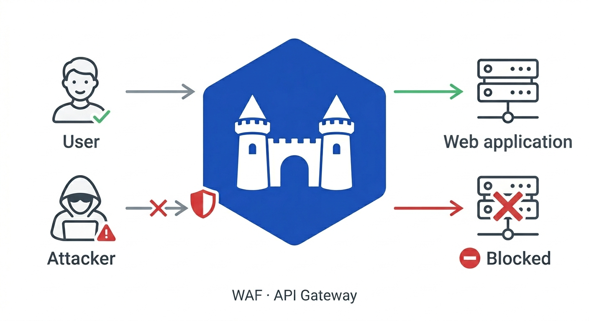

Barbacana¶
Secure by default. Simple by design.


Barbacana is an open-source WAF and API security gateway. It sits between the internet and your application, inspects every HTTP request for known attack patterns — SQL injection, XSS, command injection, path traversal, and hundreds more — and blocks malicious requests before they reach your server.

Quickstart¶
docker run --rm -p 8080:8080 \
-v $(pwd)/waf.yaml:/etc/barbacana/waf.yaml:ro \
ghcr.io/barbacana-waf/barbacana:latest
That's it. Every protection is on by default. Full quickstart →
And that minimalistic configuration works. Out of the box, with no extra tuning, Barbacana v0.5.0 scored 93.65% on GoTestWAF, an open-source WAF benchmark: it blocked 84% of attacks while allowing 91% of normal traffic, a strong balance between security and false positives. It also passes 99.75% of go-ftw, the official test suite from the OWASP CRS authors.
Beyond the defaults¶
The defaults cover the happy path. When you need to tune a noisy route, terminate TLS, or roll out a new endpoint without blocking traffic — the config stays just as small.
182 protections on by default, 30 more opt-in¶
All 182 named protections activate the moment you start Barbacana — no config required. A further 30 are available as opt-in: aggressive detection variants that need per-app tuning. For example, sql-injection-comments-in-json Detects real MySQL comment/space-obfuscation but blocks ordinary JSON when active. The protection catalog details each protection, why they should be on or off.
Tune by name, not by rule ID¶
Protections have human-readable names. For example, the protection sql-injection-union-select detects UNION SELECT and ALTER TABLE patterns — instead of SecRuleRemoveById 942270. The code disables that protection in the /search route, where users can legitimately submit SQL snippets as part of their queries.
Distributed traces¶
Ship W3C trace context to any OTLP collector — Jaeger, Tempo, or your vendor backend. Barbacana propagates traceparent to your server, so a single distributed trace continues from client, through the WAF, into your application.
Accept only what the route expects¶
Declare the allowed methods and content types per route. Requests outside that envelope get a 405 or 415 before WAF rules even run.
HTTPS, no certificates to manage¶
Add a hostname. Barbacana provisions and renews Let's Encrypt certificates automatically, redirects :80 to :443, and uses a local CA for .localhost development.
Validate requests against your OpenAPI spec¶
Mount a spec and Barbacana enforces it at the gateway — unknown paths, wrong methods, and malformed bodies are rejected before they reach your server.
Safe file upload endpoints¶
Constrain upload routes by file count, size, and MIME type. Barbacana inspects multipart requests and rejects oversized or unexpected file types before they reach your server.
Single image · 500+ OWASP CRS rules · Apache 2.0
Built on¶
Barbacana wraps Caddy (HTTP, TLS, reverse proxy), Coraza (WAF engine), and the OWASP CRS v4 (detection rules) — two decades of work by the security community made this project possible. Big thanks to their maintainers and contributors.
Barbacana also runs ghcr.io/barbacana-waf/barbacana as the main image registry, with an identical mirror at docker.io/barbacana/barbacana.